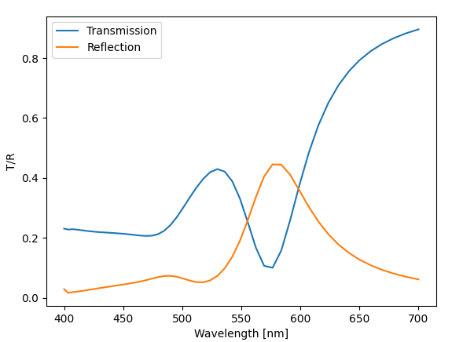

Installation and getting started#
Installation#

You can install PyLumerical using pip.
First, create a virtual environment and activate it to avoid dependency conflicts and to keep your global Python environment clean.
1python -m venv .venv
2source .venv/bin/activate
1python -m venv .venv
2.venv\\Scripts\\activate.bat
1python -m venv .venv
2.venv\\Scripts\\Activate.ps1
Then, upgrade pip to the latest version, and install PyLumerical with the package name ansys-lumerical-core.
1python -m pip install -U pip
2python -m pip install ansys-lumerical-core
Tip
Using a virtual environment isn’t a requirement, but it’s a best practice for Python development. PyLumerical is compatible with various Python IDEs including VS Code, Jupyter Notebook, and Cursor. After installation, you can use your preferred editor to start using PyLumerical.
Requirements#
You must have an Ansys Lumerical GUI license along with Lumerical 2022 R1 or later on your computer to use PyLumerical. For more information, please visit the licensing page on the Ansys Optics website.
Upon importing PyLumerical, the autodiscovery logic automatically locates the Lumerical installation path and configures interop.
If autodiscovery fails, set the LUMERICAL_HOME environment variable before import and start a new Python session.
To use the Lumerical photonic inverse design module lumopt2, you must have Ansys Lumerical FDTD™ version 2026 R1.2 or later installed on your computer. The autodiscovery logic automatically locates the lumopt2 module if it is available.
Importing modules#
To use PyLumerical for simulation automation:
1import ansys.lumerical.core as lumapi
Tip
When imported this way, you can directly use your scripts written with the legacy lumapi Python module.
To use the lumopt2 inverse design module, use the code below. For further information, see the lumopt2 introduction page.
1import ansys.lumerical.core.lumopt2 as lmpt
Warning
To ensure correct functionality, only import
lumopt2throughansys.lumerical.core.Manual
sys.pathoverrides forlumopt2are unsupported. Thelumopt2module bundled with Ansys Lumerical products silently takes precedence over those added tosys.path.
My first PyLumerical project#
The code snippet below provides a simple project of using PyLumerical to drive a Lumerical FDTD simulation with an array of nanoholes on a gold film atop a glass substrate.
Step 1 - Import and simulation parameters
Import PyLumerical and define various simulation parameters.
Show parameter definition
1# Define parameters
2
3filename = "Nanohole_array.fsp"
4
5# Parameters related to the patterned film
6periodicity = 400e-9 # 400 nm periodic array
7film_thickness = 100e-9
8hole_radius = 100e-9 # radius of the nanoholes
9nx = ny = 3 # Number of nanoholes
10
11# Parameters for the substrate
12substrate_thickness = 1e-6
13substrate_span = 1.2e-6
14
15# FDTD region and mesh
16fdtd_z_span = 1e-6 # Ensure span is large enough to capture both T, R monitors
17transmission_z = 0.4e-6 # z position of top "T" monitor
18reflection_z = -0.2e-6 # z position of bottom "R" monitor
19dx = 0.01e-6 # mesh override resolution
20
21# Source and wavelengths
22source_z = 0.3e-6 # position of source
23wavelength_start = 0.4e-6
24wavelength_stop = 0.7e-6
Step 2 - Build simulation
Set up the simulation, including the region, geometry, materials, source, and monitors.
Show simulation setup
1# Initialize session and build simulation objects. Set hide = True to hide the Lumerical GUI.
2
3with lumapi.FDTD(hide=False) as fdtd:
4 # Add the substrate
5 fdtd.addrect(name="substrate",
6 x_span=substrate_span,
7 y_span=substrate_span,
8 z_max=0,
9 z_min=substrate_thickness,
10 material="SiO2 (Glass) - Palik")
11
12 # Add the gold film
13 fdtd.addrect(name="film",
14 x_span=substrate_span,
15 y_span=substrate_span,
16 z_max=film_thickness,
17 z_min=0,
18 material="Au (Gold) - CRC")
19
20 # Add the nanohole array in the gold layer
21 # For this, we use the built-in rectangular photonic crystal object from the library
22 pc_props = {
23 "name": "nanoholes",
24 "material": "etch",
25 "radius": hole_radius,
26 "z": film_thickness / 2,
27 "z span": film_thickness,
28 "nx": nx,
29 "ny": ny,
30 "ax": periodicity,
31 "ay": periodicity,
32 }
33 fdtd.addobject("rect_pc")
34 fdtd.set(pc_props)
35
36 # Set up the simulation region
37 fdtd_geometry_props = {"x": 0, "x span": periodicity, "y": 0, "y span": periodicity, "z": 0, "z span": fdtd_z_span}
38 # Use symmetric boundary conditions in x and y and steep angle PML profile in z
39 fdtd_boundary_props = {
40 "allow symmetry on all boundaries": 1,
41 "x min bc": "anti-symmetric",
42 "x max bc": "anti-symmetric",
43 "y min bc": "symmetric",
44 "y max bc": "symmetric",
45 "z min bc": "PML",
46 "z max bc": "PML",
47 "pml profile": 3,
48 }
49 # Combine properties settings into one dictionary
50 fdtd_props = OrderedDict({**fdtd_geometry_props, **fdtd_boundary_props})
51 fdtd.addfdtd(properties=fdtd_props)
52
53 # Add a mesh override region around the holes
54 fdtd.addmesh(dx=dx, dy=dx, dz=dx, based_on_a_structure=1, structure="circle")
55
56 # Add plane wave source
57 fdtd.addplane(injection_axis="z-axis", direction="backward", x_span=substrate_span, y_span=substrate_span, z=source_z)
58 fdtd.setglobalsource("wavelength start", wavelength_start)
59 fdtd.setglobalsource("wavelength stop", wavelength_stop)
60
61 # Set up frequency domain monitors to measure R and T
62 # First, set global monitor properties
63 # Source limits will be used by default to define min/max wavelength
64 fdtd.setglobalmonitor("frequency points", 50)
65 # Now add the monitors
66 fdtd.adddftmonitor(name="T_monitor",
67 monitor_type="2D Z-normal",
68 x_span=substrate_span,
69 y_span=substrate_span,
70 z=transmission_z)
71 fdtd.adddftmonitor(name="R_monitor",
72 monitor_type="2D Z-normal",
73 x_span=substrate_span,
74 y_span=substrate_span,
75 z=reflection_z)
76
77 # zoom CAD view around simulation region
78 fdtd.select("FDTD")
79 fdtd.setview("extent")
80
81 fdtd.save(filename)
82 print("File saved to folder as: " + filename)
83
84 # Open the file and run the simulation! Visualize the T/R spectrum.
Step 3 - Run and plot results
Run the simulation and plot the transmission and reflection spectra.
Show simulation run and plotting
1with lumapi.FDTD(filename, hide=True) as fdtd:
2 print("Starting simulation now...")
3 fdtd.run()
4 print("Run completed.")
5
6 # Retrieve results
7 T = fdtd.getresult("T_monitor", "T") # Returns lumerical dataset T vs lambda/f
8 R = fdtd.getresult("R_monitor", "T")
9
10 # Visualize using matplotlib
11 fig, ax = plt.subplots()
12 ax.plot(T["lambda"] * 1e9, T["T"], label="Transmission")
13 ax.plot(R["lambda"] * 1e9, -1 * R["T"], label="Reflection") # light traveling along -z so T result is negative
14 ax.set_xlabel("Wavelength [nm]")
15 ax.set_ylabel("T/R")
16 ax.legend()
17 plt.show()
The figure below shows the transmission and reflection spectrum of the array.

Full script
Show full script for copy and paste
1# Import modules
2
3from collections import OrderedDict
4
5import matplotlib.pyplot as plt
6
7import ansys.lumerical.core as lumapi
8
9# --- Parameters ---
10# Define parameters
11
12filename = "Nanohole_array.fsp"
13
14# Parameters related to the patterned film
15periodicity = 400e-9 # 400 nm periodic array
16film_thickness = 100e-9
17hole_radius = 100e-9 # radius of the nanoholes
18nx = ny = 3 # Number of nanoholes
19
20# Parameters for the substrate
21substrate_thickness = 1e-6
22substrate_span = 1.2e-6
23
24# FDTD region and mesh
25fdtd_z_span = 1e-6 # Ensure span is large enough to capture both T, R monitors
26transmission_z = 0.4e-6 # z position of top "T" monitor
27reflection_z = -0.2e-6 # z position of bottom "R" monitor
28dx = 0.01e-6 # mesh override resolution
29
30# Source and wavelengths
31source_z = 0.3e-6 # position of source
32wavelength_start = 0.4e-6
33wavelength_stop = 0.7e-6
34# --- Parameters end ---
35
36# --- Simulation setup ---
37# Initialize session and build simulation objects. Set hide = True to hide the Lumerical GUI.
38
39with lumapi.FDTD(hide=False) as fdtd:
40 # Add the substrate
41 fdtd.addrect(name="substrate",
42 x_span=substrate_span,
43 y_span=substrate_span,
44 z_max=0,
45 z_min=substrate_thickness,
46 material="SiO2 (Glass) - Palik")
47
48 # Add the gold film
49 fdtd.addrect(name="film",
50 x_span=substrate_span,
51 y_span=substrate_span,
52 z_max=film_thickness,
53 z_min=0,
54 material="Au (Gold) - CRC")
55
56 # Add the nanohole array in the gold layer
57 # For this, we use the built-in rectangular photonic crystal object from the library
58 pc_props = {
59 "name": "nanoholes",
60 "material": "etch",
61 "radius": hole_radius,
62 "z": film_thickness / 2,
63 "z span": film_thickness,
64 "nx": nx,
65 "ny": ny,
66 "ax": periodicity,
67 "ay": periodicity,
68 }
69 fdtd.addobject("rect_pc")
70 fdtd.set(pc_props)
71
72 # Set up the simulation region
73 fdtd_geometry_props = {"x": 0, "x span": periodicity, "y": 0, "y span": periodicity, "z": 0, "z span": fdtd_z_span}
74 # Use symmetric boundary conditions in x and y and steep angle PML profile in z
75 fdtd_boundary_props = {
76 "allow symmetry on all boundaries": 1,
77 "x min bc": "anti-symmetric",
78 "x max bc": "anti-symmetric",
79 "y min bc": "symmetric",
80 "y max bc": "symmetric",
81 "z min bc": "PML",
82 "z max bc": "PML",
83 "pml profile": 3,
84 }
85 # Combine properties settings into one dictionary
86 fdtd_props = OrderedDict({**fdtd_geometry_props, **fdtd_boundary_props})
87 fdtd.addfdtd(properties=fdtd_props)
88
89 # Add a mesh override region around the holes
90 fdtd.addmesh(dx=dx, dy=dx, dz=dx, based_on_a_structure=1, structure="circle")
91
92 # Add plane wave source
93 fdtd.addplane(injection_axis="z-axis", direction="backward", x_span=substrate_span, y_span=substrate_span, z=source_z)
94 fdtd.setglobalsource("wavelength start", wavelength_start)
95 fdtd.setglobalsource("wavelength stop", wavelength_stop)
96
97 # Set up frequency domain monitors to measure R and T
98 # First, set global monitor properties
99 # Source limits will be used by default to define min/max wavelength
100 fdtd.setglobalmonitor("frequency points", 50)
101 # Now add the monitors
102 fdtd.adddftmonitor(name="T_monitor",
103 monitor_type="2D Z-normal",
104 x_span=substrate_span,
105 y_span=substrate_span,
106 z=transmission_z)
107 fdtd.adddftmonitor(name="R_monitor",
108 monitor_type="2D Z-normal",
109 x_span=substrate_span,
110 y_span=substrate_span,
111 z=reflection_z)
112
113 # zoom CAD view around simulation region
114 fdtd.select("FDTD")
115 fdtd.setview("extent")
116
117 fdtd.save(filename)
118 print("File saved to folder as: " + filename)
119
120 # Open the file and run the simulation! Visualize the T/R spectrum.
121# --- Simulation setup end --
122
123
124# --- Run ---
125with lumapi.FDTD(filename, hide=True) as fdtd:
126 print("Starting simulation now...")
127 fdtd.run()
128 print("Run completed.")
129
130 # Retrieve results
131 T = fdtd.getresult("T_monitor", "T") # Returns lumerical dataset T vs lambda/f
132 R = fdtd.getresult("R_monitor", "T")
133
134 # Visualize using matplotlib
135 fig, ax = plt.subplots()
136 ax.plot(T["lambda"] * 1e9, T["T"], label="Transmission")
137 ax.plot(R["lambda"] * 1e9, -1 * R["T"], label="Reflection") # light traveling along -z so T result is negative
138 ax.set_xlabel("Wavelength [nm]")
139 ax.set_ylabel("T/R")
140 ax.legend()
141 plt.show()
142# --- Run end ---
Further resources#
Information on key concepts of PyLumerical.
Reference for the PyLumerical API.
Gallery of examples using PyLumerical.
Reference for Lumerical scripting commands.
Introduction to using lumopt2 for photonic inverse design.
Recommended examples#
Recommended examples to further build your understanding of PyLumerical and its capabilities.
Run an FDTD simulation using PyLumerical and plot the electric field.
Run a waveguide simulation in MODE.
Run an an INTERCONNECT simulation for a ring resonator.